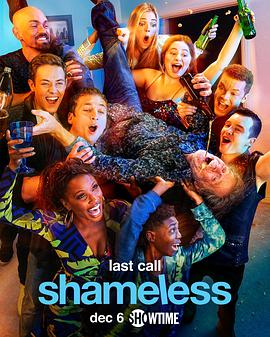

9.6
无耻之徒
Shameless
2021
美国
评分 9.6
导演:
约翰·威尔斯 / 伊恩·B·麦克唐纳
演员:
威廉姆·H·梅西 / 艾米·罗森 / 杰瑞米·艾伦·怀特 / 卡梅隆·莫纳汉 / 艾玛·肯尼 / 伊森·卡特科斯基 / 珊诺拉·汉普顿
类型:
剧情,喜剧
剧情简介
《无耻之徒》（美版）以芝加哥南区为背景，追随加拉格尔一家十一年的动荡人生。故事从一个破败的家开始：父亲弗兰克终日酗酒、骗补助、制造混乱，他的存在更像一团随时引爆的烟雾；而年仅二十出头的菲欧娜被迫接管整个家庭，在打工、生存和照顾六个弟妹之间疲于奔命。她一边承担着母亲般的责任，一边在爱情、自尊和选择中不断挣扎，试图在混乱生活里找到自己的未来。利普拥有惊人的头脑，却总在聪明与自毁之间摇摆。他在友情、爱情与学业中屡屡走偏，又一次次试图把人生重新拉回正轨。伊恩则在成长过程中面对身份、情感与躁郁症的三重夹击，他努力寻找属于自己的位置，也在与米奇的关系里经历痛苦与依赖。黛比早熟固执，为家庭付出太多，也因渴望被爱做出冲动决定；卡尔从暴力少年一路摸索，跌跌撞撞地寻找人生方向；最小的利亚姆在混乱环境下长大，用自己的方式观察世界、理解家庭。随着季节推进，南区也在不断改变。房地产开发、政治冲突、社区流失、贫富差距，外部世界的压力与内部家庭的矛盾交织，让加拉格尔一家每走一步都像在风口浪尖。菲欧娜在经历事业的兴起、崩溃与重建后，被迫离开家乡重新生活；伊恩和米奇在争吵与和解中试探着稳定关系；利普一步步学会承担责任；黛比试图在母亲与自我之间找到平衡；卡尔开始认真思考未来。最终季里，时代的变化、疾病、离别与成长逐渐将故事推向终点。弗兰克的生命在混乱与回忆中缓缓落幕，而加拉格尔的孩子们终于真正长大，在面对卖房、迁移、婚姻、工作、家庭等选择时，各自踏入属于自己的新阶段。整部剧以幽默包装现实，以荒诞揭开生活的真相。它刻画的是一群被社会忽视却努力生存的小人物：他们吵闹、犯错、无耻，却也充满韧性与情感。十一季的篇幅见证了成长、挣扎、失去与坚持，呈现出一个破碎、混乱，却又无比真实、无比动人的家庭故事。